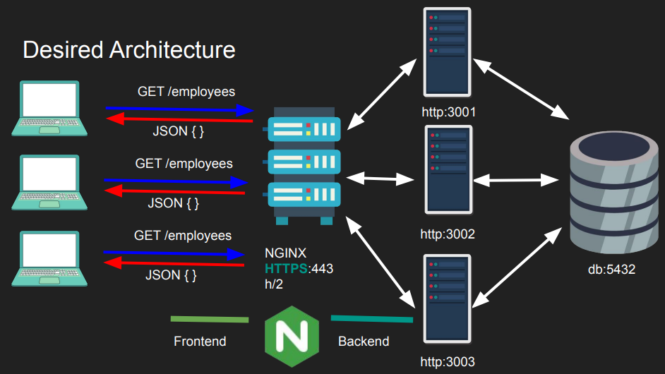

| Before Nginx | After Nginx |
|---|---|
|
 |
| - The server can get overloaded as number of connections increase | Load balanced with Nginx, backend can scale independently |
| - We can spin up multiple servers running on several ports but now the clients have to be aware of them too. | Backend routing with Nginx |
| - The endpoints are not secured, and with multiple servers multiple certificates need to be issued (or copied to each) | Can issue one certificate with Nginx, multiple certificates not required |
Nginx benefits don’t come for free as it is an extra layer and there is some overhead, that is why Nginx or any reverse proxy has to be as efficient as possible.
stream context it becomes a layer 4 proxyhttp context it becomes a layer 7 proxy